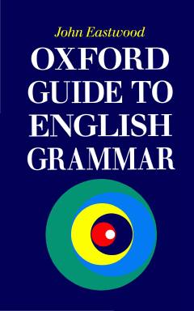

OGIngliz tili grammatikasi bo'yicha keng qamrovli va ishonchli qo'llanma.
Ushbu kitob zamonaviy ingliz tilining grammatik shakllari va ularning ishlatilishini o'rgatuvchi keng qamrovli qo'llanma hisoblanadi. Asar o'rta va yuqori bosqich o'quvchilari hamda o'qituvchilar uchun mo'ljallangan bo'lib, misollar va tushuntirishlarga boy. Kitobda rasmiy va norasmiy nutq farqlari, shuningdek, kundalik muloqotdagi grammatik qoidalar atroflicha yoritilgan.